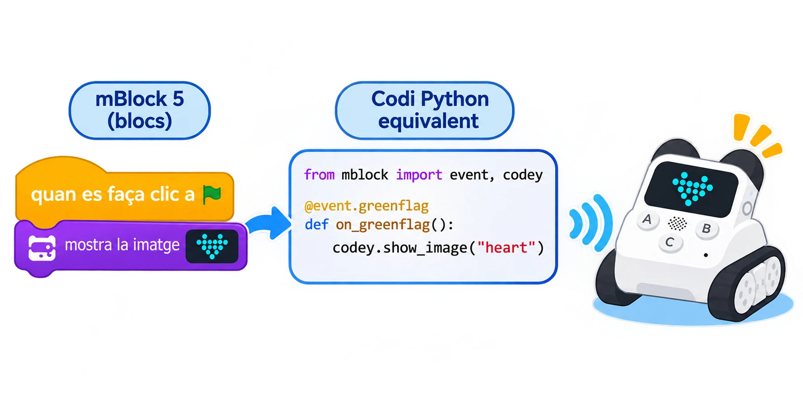

Codey Rocky: del programa de blocs a Python en mBlock
Connectar Codey Rocky, carregar un programa de blocs i inspeccionar o editar la traducció Python del mode Upload.
🌱 Situació, repte i intenció
- Connectar Codey a mBlock 5 i seleccionar el dispositiu correcte.
- Distingir l’execució Live de la càrrega Upload.
- Crear dos esdeveniments de botó amb blocs i executar-los sense connexió permanent.
- En mode Upload, obrir la vista Python generada pels blocs i identificar imports, esdeveniments i instruccions del dispositiu.
- Canviar una acció i comprovar el resultat amb el robot.
🎯 Aprenentatges i vocabulari
- Programació de Codey Rocky amb blocs i Python a mBlock 5.
- Botons A i B del controlador Codey com a entrades i matriu LED 16 × 8 com a eixida.
- Mode Live per a executar mentre Codey continua connectat i mode Upload per a transferir el programa al controlador.
- Vista de codi Python generat pels blocs i ús de biblioteques pròpies de Codey/Rocky.
🧰 Materials i preparació
- Codey Rocky de la dotació, carregat i amb el controlador ben acoblat al xassís.
- mBlock 5 per a ordinador i cable micro-USB de la dotació.
- Superfície plana, amb espai lliure al voltant de Rocky; es pot elevar el xassís perquè les erugues no el desplacen durant la primera comprovació.
- Targetes A/B amb les dues expressions que mostrarà la matriu 16 × 8.
Obriu mBlock, afegiu el dispositiu «Codey» de la biblioteca i connecteu-lo per USB. En mode Upload, comproveu primer que el programa de blocs funciona abans d’obrir la vista Python. Segons l’edició i versió de mBlock, l’etiqueta o la posició de l’opció Python pot canviar; si no apareix, actualitzeu el programari del centre segons les instruccions oficials o feu l’exercici amb la traducció de blocs que sí que es mostre.
📅 Seqüència didàctica
Connecteu el dispositiu Codey
Desenvolupament del pas
Useu el cable micro-USB per a connectar Codey a l’ordinador i enceneu-lo. A mBlock 5, afegiu «Codey» i completeu la connexió. Confirmeu que l’estat és connectat abans de crear el programa. Si useu la versió web, seguiu el mètode de connexió i el controlador mLink que indique la instal·lació del centre.
Creeu el programa amb blocs
Desenvolupament del pas
En mode Upload, creeu un esdeveniment «quan es prema el botó A» i afegiu una imatge a la pantalla. Creeu un segon esdeveniment per al botó B amb una imatge diferent. Proveu primer les dues condicions i observeu els indicadors de càrrega; no poseu ordres de moviment motor en aquesta primera pràctica.
Carregueu i comproveu el programa
Desenvolupament del pas
Seleccioneu Upload i transferiu el projecte a Codey. Quan la càrrega acabe, desconnecteu el cable només si el programa ja s’ha transferit i proveu A i B. El programa carregat continua funcionant sense connexió a mBlock. En Live, en canvi, el controlador ha de mantindre la connexió amb l’ordinador perquè les ordres s’executen en temps real.

Obriu la vista Python generada
Desenvolupament del pas
Torneu a connectar Codey, obriu el mateix projecte en mode Upload i activeu l’opció per canviar entre blocs i Python. Localitzeu els imports de les biblioteques Codey/Rocky, les dues funcions d’esdeveniment i les instruccions que mostren les imatges. No copieu aquesta traducció com si fora Python estàndard: depén de les biblioteques i de l’entorn mBlock.
Modifiqueu una instrucció i torneu-la a provar
Desenvolupament del pas
Canvieu una de les imatges des de l’editor Python si la vostra versió permet editar el codi, o torneu a la vista de blocs i canvieu el dibuix allí. Carregueu una altra vegada el programa i proveu el botó afectat. Compareu el canvi fet al programa amb la resposta de la matriu; no modifiqueu les dues ordres alhora.
🧪 Evidències i avaluació
Feu una prova en Live i una altra en Upload. En cada cas, registreu si Codey continua connectat, què passa en prémer A i B i si el programa segueix funcionant després de desconnectar el cable. Si Python no apareix, comproveu primer que heu seleccionat Codey, que esteu en Upload i que la versió de mBlock ofereix la vista de codi per a aquest dispositiu.
Preguntes per comprovar
- Quina diferència pràctica hi ha entre Live i Upload?
- Quines línies Python corresponen als botons A i B?
- Què aporten els imports de les biblioteques Codey i Rocky?
- Per què un programa carregat continua funcionant quan desconnectem el cable?
- Quina única instrucció heu canviat i quina prova mostra l’efecte?
✅ Evidències d’aprenentatge
- Deseu el projecte de blocs, una captura o transcripció de la vista Python, el registre comparatiu Live/Upload i la prova final en A i B. Indiqueu la versió de mBlock, si el codi Python s’ha pogut editar directament i si el programa s’ha provat amb maquinari o només en la vista de codi.
♿ Participació, accessibilitat i seguretat
Oferiu una versió impresa dels blocs i de la vista Python, amb colors o marques que connecten cada esdeveniment amb la instrucció equivalent. Una persona pot llegir el codi i una altra provar els botons. Manteniu el robot quiet mentre feu les primeres proves; abans d’afegir motors, deixeu lliure la zona i tingueu a mà l’aturada del programa.
🔗 Referents i adaptació
La guia oficial de Makeblock Program Codey Rocky with mBlock 5 confirma els modes Live/Upload i que, en Upload, es pot canviar entre blocs i Python o veure el codi corresponent. La documentació de transcodificació d’Upload mostra les biblioteques codey i rocky. Les opcions de vista i edició depenen de la versió instal·lada; la guia no pressuposa una API manual estable ni una connexió a Internet durant l’execució carregada.